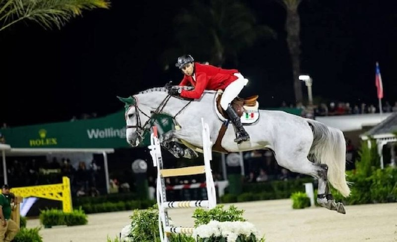

Arturo Parada Vallejo gana el Gran Premio CSI2* del MLSJ Monterrey con 'Laretto'
El jinete mexicano Arturo Parada Vallejo se adjudicó este domingo el Gran Premio CSI2* (1,45 m, ranking C) del Mexican League Show Jumping (MLSJ) en el Club Hípico La Silla de Monterrey, montando a Laretto.

El jinete mexicano Arturo Parada Vallejo se adjudicó este domingo el Gran Premio CSI2* (1,45 m, ranking C) del Mexican League Show Jumping (MLSJ) en el Club Hípico La Silla de Monterrey, montando a Laretto.
El podio dejó doblete local para la afición mexicana. Nicolás Pizarro fue segundo con Sorrento, mientras que el argentino Juan Bautista Pidutti Hortas completó la terna con Chaquiggy PS, en una prueba ranking FEI categoría C que repartió puntos para el escalafón mundial individual de salto.
El MLSJ Monterrey es uno de los grandes citas del calendario internacional latinoamericano y se desarrolla bajo el paraguas del calendario CSI5 de la Mexican League Show Jumping en La Silla, una de las instalaciones de referencia del salto en el continente americano. La etapa CSI2 del programa, que se disputa en paralelo a las pruebas del CSI5* principal, congrega a una nutrida representación de jinetes locales y americanos.
Arturo Parada Vallejo, que aporta nombre histórico al salto mexicano, suma con Laretto un triunfo de calado en su circuito doméstico. La victoria refuerza al binomio en el ranking C de la FEI y le permite sumar puntos cara a la temporada internacional.
Nicolás Pizarro, segundo con Sorrento, mantiene su buen nivel competitivo en el circuito mexicano. El jinete azteca encadena resultados en La Silla, sede que conoce a la perfección. Y Juan Bautista Pidutti Hortas, tercero con Chaquiggy PS, prolonga la presencia argentina en el podio del MLSJ, una constante de las últimas ediciones.
La presencia española en la prueba se concentró en el bloque medio de la clasificación. Mejor española: 39ª Ainhoa Manero Benavente con Jisidora, en una prueba con cuadro internacional muy disputado y barémo a tiempo a la primera dificultad.
— Redacción de Hípica al Día